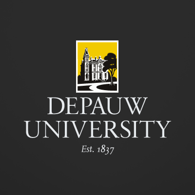
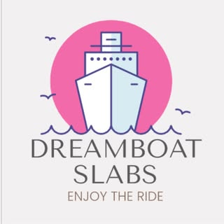
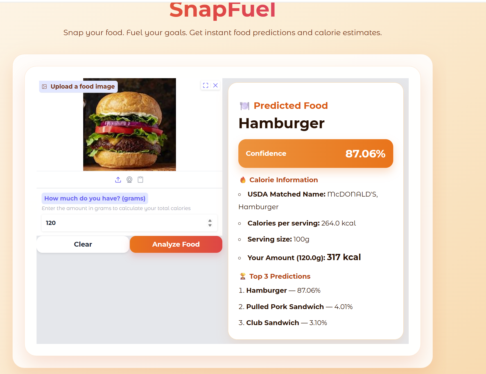
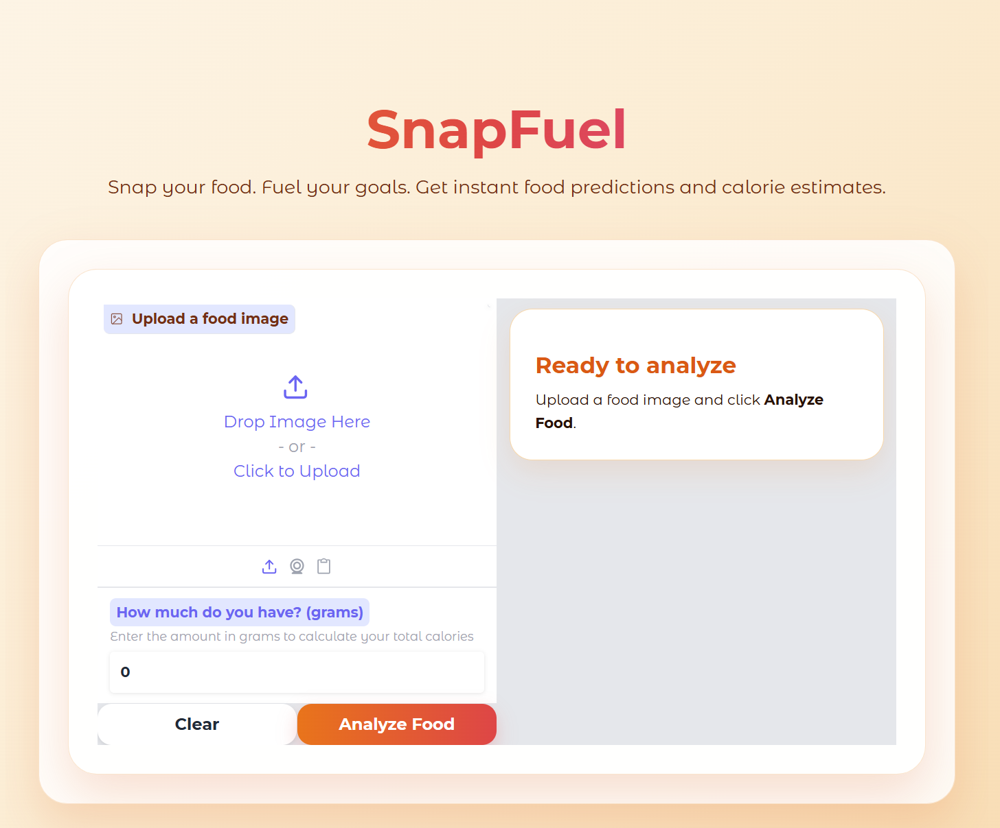

I turn data
into decisions.
I'm a senior at DePauw University studying Business Analytics and Computer Science — looking for full-time roles in data analytics, business intelligence, or software engineering.
A little more about me.
I'm a senior at DePauw University studying Business Analytics and Computer Science. I decided to pursue these degrees because I wanted to understand both sides — the data and the code — and use them together to actually solve real world problems. Not just analyze a problem and hand it off, but build something that fixes them.
At PAM Health, I grew my technical skills as a Data Analyst, working in Excel, building dashboards in Looker and providing valuable insight to executives on potential expansion. At Turner Construction, I grew as a leader and a better communicator — working on a $2.6 billion project with a strict schedule taught me a multitude of skills I couldn't have picked up anywhere else. I also started my own sports card business from scratch, starting with $100 and growing it to over $10K in inventory and cash, which taught me just how valuable relationships among people can truly be.
I also compete on the NCAA DePauw Men's Soccer Team. Two NCAA Tournament runs, back-to-back NCAC championships. Putting in 15+ hours a week on top of everything else has taught me how to stay focused when things get hard — which comes up a lot.
Every one of these experiences — the dashboards, the job sites, the business, the soccer field — has shaped the way I think and work. I show up differently now than I did three years ago, and I'm only getting started.
Languages & Programming
Data & Analytics
Business
Where I've worked.
Every role taught me something I couldn't have learned in a classroom.

Teaching Assistant — Intro to Computer Science
DePauw University- Supported students through foundational CS concepts, debugging, and problem-solving
- Held office hours, assisted with grading, and worked with faculty to improve student outcomes
Superintendent Intern
Turner Construction- Tracked and updated construction schedules, identifying delays and out-of-sequence work before they became problems
- Collaborated with subcontractors and trades to keep project deliverables on track
- Monitored and resolved RFIs, keeping communication tight between field teams and project management
Data Analyst Intern
PAM Health- Evaluated 100+ potential markets for expansion and delivered insights that shaped strategic growth decisions
- Built Looker Studio dashboards identifying patient experience gaps — presented findings directly to executive leadership
- Engineered KPI dashboards to monitor performance metrics across all 70 hospitals in real time

Founder & Owner
Dreamboat Slabs- Launched and scaled a sports card reselling business across eBay, Instagram, and Facebook — nearly $10K in profit
- Handle all operations: inventory management, customer relations, P&L tracking, and point-of-sale
Where I've learned.
DePauw University
B.S. Business Analytics & Computer Science
Aug 2023 – May 2027
Things I've built.
Here's some of the work I'm most proud of. Each one started with a real problem and ended with something that actually worked.


SnapFuel
The problem: People quit their diets because logging food manually is tedious. SnapFuel lets you snap a photo of your meal, enter the portion in grams, and instantly get nutritional info — no more guessing what you just ate.
Dreamboat Slabs — Card Scanner & Profit Tracker
The problem: Running a sports card business meant logging every card into a spreadsheet by hand — slow, tedious, and easy to get wrong. This full-stack app scans a physical card, auto-identifies it with computer vision (YOLOv8 region detection + GPT-4o Vision OCR), and tracks purchase price → sale price → profit automatically. Built multi-tenant from day one so other sellers can use it too.
Hanashi Tomodachi — AI Japanese Conversation Partner
The problem: Solo language learners have no one to actually talk to — the hardest part of learning a language. Hanashi Tomodachi is a voice-based AI partner: you have a real spoken conversation in Japanese, get live corrections, and can ask "what does that mean?" mid-conversation to get a translation before jumping back in.
Let's talk.
If you have a role you think I'd be a good fit for, or just want to connect — reach out. I'm always open to a conversation.
Ready to connect?
The fastest way to reach me is straight to my inbox — I'll get back to you quickly.
Email Me